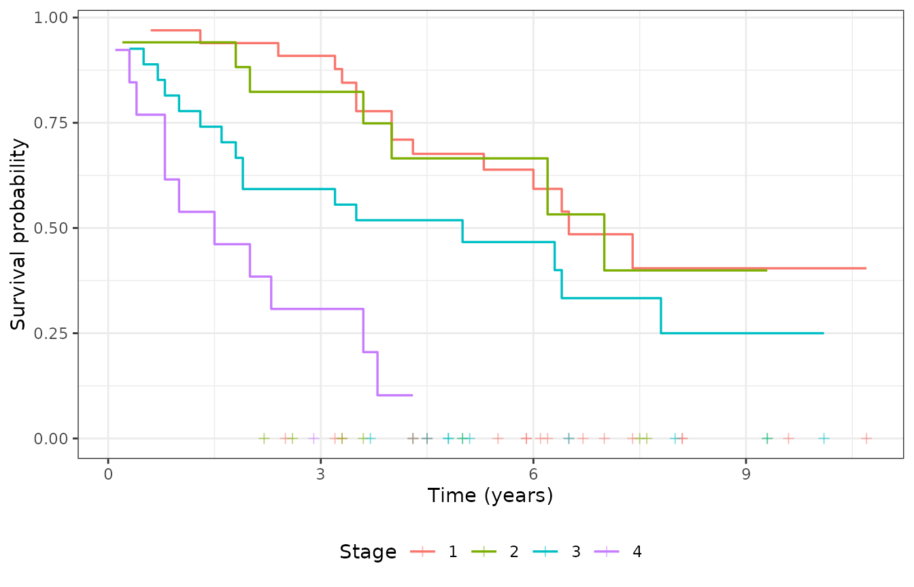
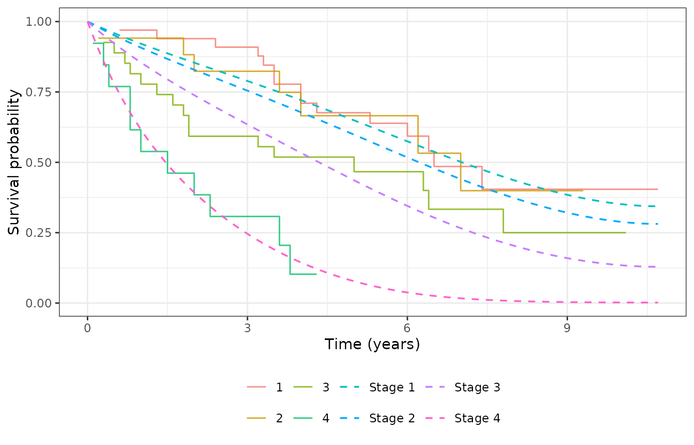
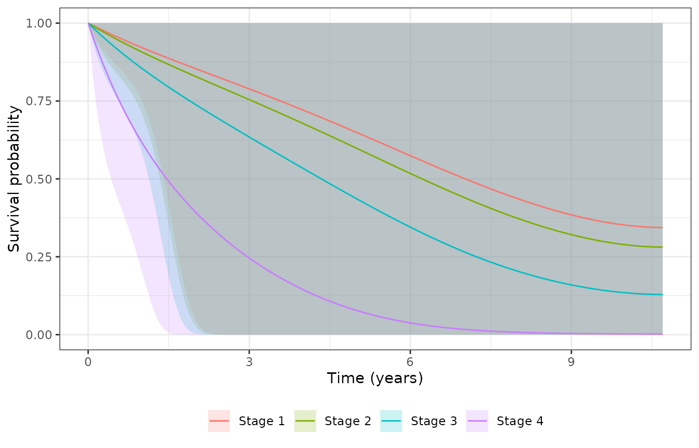

Unlike stepwise Cox survfit curves, spsurv
evaluates survival on a dense time grid using the
fitted Bernstein baseline. This vignette connects observed Kaplan-Meier
curves to model-based predictions.
Before you model
library(spsurv)
library(KMsurv)
library(survival)
library(ggplot2)
data(larynx)
larynx$stage <- factor(larynx$stage)
km_stage <- survfit(Surv(time, delta) ~ stage, data = larynx)
km_long <- data.frame(
time = km_stage$time,
surv = km_stage$surv,
stage = rep(levels(larynx$stage), km_stage$strata)
)
ggplot(km_long, aes(x = time, y = surv, color = stage)) +
geom_step(linewidth = 0.6) +
geom_point(
data = subset(larynx, delta == 0),
aes(x = time, y = 0, color = stage),
shape = 3,
size = 1.5,
alpha = 0.5,
inherit.aes = FALSE
) +
labs(x = "Time (years)", y = "Survival probability", color = "Stage") +
theme_bw() +
theme(legend.position = "bottom")
Kaplan-Meier by stage with censoring marks (+).
We compare predictions at age = 70 across all stages — a clinically interpretable profile that holds age fixed while varying disease stage.
Fit and summarize
fit <- bpph(
Surv(time, delta) ~ age + stage,
degree = 5,
data = larynx,
approach = "mle",
init = 0
)
summary(fit)
#> Call:
#> bpph(formula = Surv(time, delta) ~ age + stage, degree = 5, data = larynx,
#> approach = "mle", init = 0, model = "ph")
#>
#> Bernstein PH model:
#> Regression coefficients:
#> Estimate 2.5% 97.5% Std. Error z value Pr(>|z|)
#> age 0.0197 -0.0084 0.0478 0.0143 1.4 0.17
#> stage2 0.1729 -0.7325 1.0783 0.4619 0.4 0.71
#> stage3 0.6521 -0.0450 1.3492 0.3557 1.8 0.07 .
#> stage4 1.7777 0.9469 2.6085 0.4239 4.2 3e-05 ***
#> ---
#> Signif. codes: 0 '***' 0.001 '**' 0.01 '*' 0.05 '.' 0.1 ' ' 1
#>
#> Exponentiated coefficients:
#> Estimate 2.5% 97.5%
#> age 1.02 0.99 1.0
#> stage2 1.19 0.48 2.9
#> stage3 1.92 0.96 3.9
#> stage4 5.92 2.58 13.6
#>
#> ---
#> loglik = -141 AIC = 299Prediction grid
plot_times <- seq(0, max(larynx$time), length.out = 121)
newdata <- data.frame(age = 70, stage = levels(larynx$stage))
newdata
#> age stage
#> 1 70 1
#> 2 70 2
#> 3 70 3
#> 4 70 4
predict() — tidy data frame
pr <- predict(fit, newdata = newdata, times = plot_times)
head(pr)
#> age stage id time surv lower upper cumhaz std.err
#> 1 70 1 1 0.00000000 1.0000000 1.0000000 1 0.000000000 0.00000000
#> 1.1 70 1 1 0.08916667 0.9922916 0.9665815 1 0.007738282 0.01339380
#> 1.2 70 1 1 0.17833333 0.9847495 0.9390069 1 0.015367968 0.02426802
#> 1.3 70 1 1 0.26750000 0.9773649 0.9160475 1 0.022895223 0.03305766
#> 1.4 70 1 1 0.35666667 0.9701290 0.8965413 1 0.030326268 0.04024799
#> 1.5 70 1 1 0.44583333 0.9630332 0.8793507 1 0.037667370 0.04638049Visual check — KM vs model overlay
Panel A: observed KM (step) vs model prediction (dashed) per stage.
curve_labs <- paste("Stage", newdata$stage)
pr$series <- curve_labs[match(as.character(pr$id), as.character(seq_len(nrow(newdata))))]
ggplot() +
geom_step(
data = km_long,
aes(x = time, y = surv, color = stage),
linewidth = 0.5,
alpha = 0.8
) +
geom_line(
data = pr,
aes(x = time, y = surv, color = series),
linetype = "dashed",
linewidth = 0.6
) +
labs(x = "Time (years)", y = "Survival probability", color = NULL) +
theme_bw() +
theme(legend.position = "bottom")
Observed KM (solid) vs model prediction at age 70 (dashed).
Panel B: model-based ribbons (adjusted prediction with uncertainty).
ggplot(pr, aes(x = time, y = surv, color = series, fill = series)) +
geom_ribbon(aes(ymin = lower, ymax = upper), alpha = 0.2, colour = NA) +
geom_line(linewidth = 0.5) +
labs(x = "Time (years)", y = "Survival probability", color = NULL, fill = NULL) +
theme_bw() +
theme(legend.position = "bottom")
Stage-specific survival curves with 95% intervals.
Why this is insightful
Panel A connects the smooth BP fit to observed risk sets. Panel B shows covariate-adjusted uncertainty — ribbons often widen late in follow-up when data are sparse.
What to decide
- Model curves systematically below KM → check covariate adjustment or misspecification.
- Wide bands late in follow-up → avoid over-interpreting tail survival.
- For publication → export
predict()output directly to your ggplot pipeline.
survfit() with tidy = TRUE
sf <- survfit(fit, newdata = newdata, times = plot_times, tidy = TRUE)
head(sf)
#> age stage id time surv lower upper cumhaz std.err
#> 1 70 1 1 0.00000000 1.0000000 1.0000000 1 0.000000000 0.00000000
#> 1.1 70 1 1 0.08916667 0.9922916 0.9665815 1 0.007738282 0.01339380
#> 1.2 70 1 1 0.17833333 0.9847495 0.9390069 1 0.015367968 0.02426802
#> 1.3 70 1 1 0.26750000 0.9773649 0.9160475 1 0.022895223 0.03305766
#> 1.4 70 1 1 0.35666667 0.9701290 0.8965413 1 0.030326268 0.04024799
#> 1.5 70 1 1 0.44583333 0.9630332 0.8793507 1 0.037667370 0.04638049Bayesian fits
For approach = "bayes", credible bands use posterior
draws with interval.type = "hpd" and
monotone = TRUE (default for Bayes).
Interval types (MLE)
Log–log intervals are undefined at S = 1
(time = 0), so we evaluate at time > 0
only:
loglog_times <- plot_times[plot_times > 0]
head(predict(fit, newdata = newdata, times = loglog_times, type = "log-log"))
#> age stage id time surv lower upper cumhaz
#> 1 70 1 1 0.08916667 0.9922916 0.7944418 0.9997398 0.007738282
#> 1.1 70 1 1 0.17833333 0.9847495 0.7121628 0.9993045 0.015367968
#> 1.2 70 1 1 0.26750000 0.9773649 0.6784516 0.9986497 0.022895223
#> 1.3 70 1 1 0.35666667 0.9701290 0.6644510 0.9977528 0.030326268
#> 1.4 70 1 1 0.44583333 0.9630332 0.6565284 0.9966338 0.037667370
#> 1.5 70 1 1 0.53500000 0.9560693 0.6470954 0.9953739 0.044924834
#> std.err
#> 1 0.01339380
#> 1.1 0.02426802
#> 1.2 0.03305766
#> 1.3 0.04024799
#> 1.4 0.04638049
#> 1.5 0.05205317